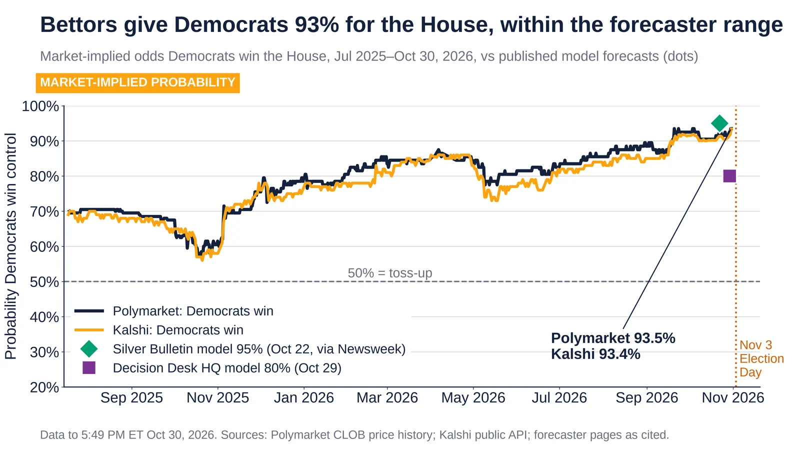
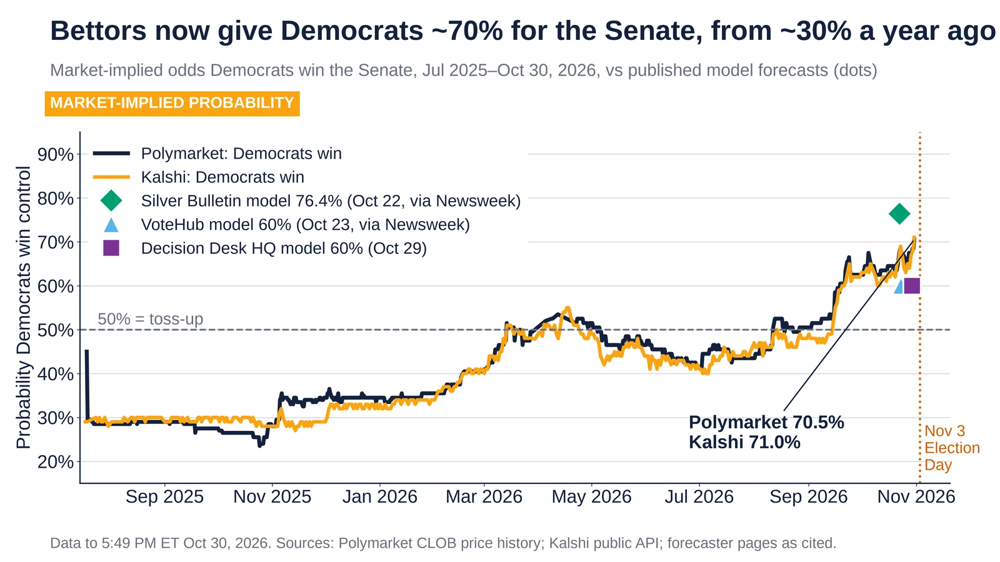
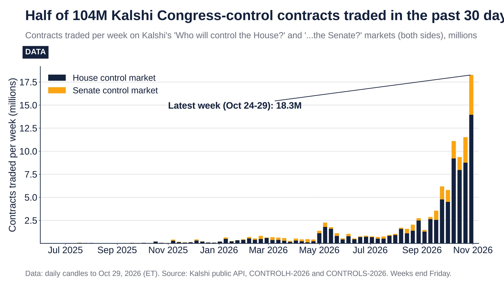

Q3. US Midterms 2026

Polymarket 93.5%, Kalshi 93.4% Democratic House odds vs models; data to 5:49 PM ET Oct 30. Sources: Polymarket, Kalshi.
- Oct 30, 2026, 5:49 PM ET: Polymarket gives Democrats 93.5% and Kalshi 93.4%. Both were about 70% in Jul 2025.
- Oct 22, 2026: the Silver Bulletin model had Democrats at 95% (reported by Newsweek on Oct 23).
- Oct 29, 2026: the Decision Desk HQ model had Democrats at 80% for the House (238 seats), per DDHQ's forecast page (last updated 2:25 PM) and DDHQ's forecast update post that day.
- Polymarket volume is $32.8M. The Kalshi market has traded about 82M contracts since Nov 2024.
Sources: Polymarket, House control 2026 Kalshi, House control Newsweek, midterm forecasts 10 days out Decision Desk HQ House forecast 2026 Decision Desk HQ forecast update post, Oct 29 2026 (Bluesky)

Democratic Senate odds: Polymarket 70.5%, Kalshi 71% vs models at 60–76%; data to 5:49 PM ET Oct 30. Sources: Polymarket, Kalshi.
- Oct 30, 2026: Polymarket is at 70.5% and Kalshi at 71.0%.
- Oct–Nov 2025: both markets had Democrats at about 27–30%. Spring 2026 was the first time they crossed 50%.
- Oct 22–29, 2026: the models give Silver Bulletin 76.4%, VoteHub 60% and DDHQ 60%.
- Polymarket volume is $13.0M. Kalshi has traded about 22M contracts.
Note: DDHQ's 60% is its Oct 29 forecast update (DDHQ described it as about a 3 in 5 chance); Newsweek's earlier report gave DDHQ's Senate figure as 57%.
Sources: Polymarket, Senate control 2026 Kalshi, Senate control Newsweek, midterm forecasts 10 days out Decision Desk HQ Senate forecast 2026 Decision Desk HQ, Senate Signals, Oct 29 2026

Weekly Kalshi contracts on House and Senate control; 18.3M in the week to Oct 29. Source: Kalshi API.
- Nov 2024 to Oct 29, 2026: 104.1M contracts traded, both sides of both markets.
- Last 30 days: 53.7M contracts, which is 52% of the total.
- Week of Oct 24–29: 18.3M contracts, a record.
- Polymarket's dollar volume on the same questions is $32.8M (House) and $13.0M (Senate).
Sources: Kalshi, House control Kalshi, Senate control Polymarket, House control 2026